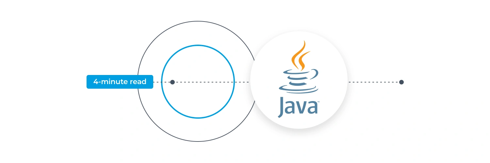

Java is a popular programming language, created in 1995.
It is owned by Oracle, and more than 3 billion devices run Java. Read more....
Coding-world
Technology news , Development and trends.
Coding-world
Technology news , Development and trends.
Introduction to java language
Java is a popular programming language, created in 1995.
It is owned by Oracle, and more than 3 billion devices run Java.
It is used for:
Mobile applications (specially Android apps)
Desktop applications
Web applications
Web servers and application servers
Games
Database connection
And much, much more!
Java History
Java, modern object-oriented computer programming language.
Java was created at Sun Microsystems, Inc., where James Gosling led a team of researchers in an effort to create a new language that would allow consumer electronic devices to communicate with each other. Work on the language began in 1991, and before long the team’s focus changed to a new niche, the World Wide Web. Java was first released in 1995, and Java’s ability to provide interactivity and multimedia showed that it was particularly well suited for the Web.
The difference between the way Java and other programming languages worked was revolutionary. Code in other languages is first translated by a compiler into instructions for a specific type of computer. The Java compiler instead turns code into something called Bytecode, which is then interpreted by software called the Java Runtime Environment (JRE), or the Java virtual machine. The JRE acts as a virtual computer that interprets Bytecode and translates it for the host computer. Because of this, Java code can be written the same way for many platforms (“write once, run anywhere”), which helped lead to its popularity for use on the Internet, where many different types of computers may retrieve the same Web page.
By the late 1990s Java had brought multimedia to the Internet and started to grow beyond the Web, powering consumer devices (such as cellular telephones), retail and financial computers, and even the onboard computer of NASA’s Mars exploration rovers. Because of this popularity, Sun created different varieties of Java for different purposes, including Java SE for home computers, Java ME for embedded devices, and Java EE for Internet servers and supercomputers. In 2010 the Oracle Corporation took over the management of Java when it acquired Sun Microsystems.
Despite the similarity in names, the JavaScript language that was designed to run in Web browsers is not part of Java. JavaScript was developed in 1995 at Netscape Communications Corp. and was conceived of as a companion to Java. It was originally called Mocha and then LiveScript before Netscape received a marketing license from Sun.

Editions
Sun has defined and supports four editions of Java targeting different application environments and segmented many of its APIs so that they belong to one of the platforms. The platforms are:
Java Card for smart-cards.[44]
Java Platform, Micro Edition (Java ME) – targeting environments with limited resources.[45]
Java Platform, Standard Edition (Java SE) – targeting workstation environments.[46]
Java Platform, Enterprise Edition (Java EE) – targeting large distributed enterprise or Internet environments.[47]
The classes in the Java APIs are organized into separate groups called packages. Each package contains a set of related interfaces, classes, subpackages and exceptions.
Sun also provided an edition called Personal Java that has been superseded by later, standards-based Java ME configuration-profile pairings.
Execution system
Java JVM and bytecode
One design goal of Java is portability, which means that programs written for the Java platform must run similarly on any combination of hardware and operating system with adequate run time support. This is achieved by compiling the Java language code to an intermediate representation called Java bytecode, instead of directly to architecture-specific machine code. Java bytecode instructions are analogous to machine code, but they are intended to be executed by a virtual machine (VM) written specifically for the host hardware. End-users commonly use a Java Runtime Environment (JRE) installed on their device for standalone Java applications or a web browser for Java applets.
Standard libraries provide a generic way to access host-specific features such as graphics, threading, and networking.
The use of universal bytecode makes porting simple. However, the overhead of interpreting bytecode into machine instructions made interpreted programs almost always run more slowly than native executables. Just-in-time (JIT) compilers that compile byte-codes to machine code during runtime were introduced from an early stage. Java's Hotspot compiler is actually two compilers in one; and with GraalVM (included in e.g. Java 11, but removed as of Java 16) allowing tiered compilation. Java itself is platform-independent and is adapted to the particular platform it is to run on by a Java virtual machine (JVM), which translates the Java bytecode into the platform's machine language.
Performance
Programs written in Java have a reputation for being slower and requiring more memory than those written in C++.[50][51] However, Java programs' execution speed improved significantly with the introduction of just-in-time compilation in 1997/1998 for Java 1.1,[52] the addition of language features supporting better code analysis (such as inner classes, the StringBuilder class, optional assertions, etc.), and optimizations in the Java virtual machine, such as HotSpot becoming Sun's default JVM in 2000. With Java 1.5, the performance was improved with the addition of the java.util.concurrent package, including lock-free implementations of the ConcurrentMaps and other multi-core collections, and it was improved further with Java 1.6.
Non-JVM
Some platforms offer direct hardware support for Java; there are micro controllers that can run Java bytecode in hardware instead of a software Java virtual machine,[53] and some ARM-based processors could have hardware support for executing Java bytecode through their Jazelle option, though support has mostly been dropped in current implementations of ARM.
Automatic memory management
Java uses an automatic garbage collector to manage memory in the object lifecycle. The programmer determines when objects are created, and the Java runtime is responsible for recovering the memory once objects are no longer in use. Once no references to an object remain, the unreachable memory becomes eligible to be freed automatically by the garbage collector. Something similar to a memory leak may still occur if a programmer's code holds a reference to an object that is no longer needed, typically when objects that are no longer needed are stored in containers that are still in use.[54] If methods for a non-existent object are called, a null pointer exception is thrown.[55][56]
One of the ideas behind Java's automatic memory management model is that programmers can be spared the burden of having to perform manual memory management. In some languages, memory for the creation of objects is implicitly allocated on the stack or explicitly allocated and deallocated from the heap. In the latter case, the responsibility of managing memory resides with the programmer. If the program does not deallocate an object, a memory leak occurs.[54] If the program attempts to access or deallocate memory that has already been deallocated, the result is undefined and difficult to predict, and the program is likely to become unstable or crash. This can be partially remedied by the use of smart pointers, but these add overhead and complexity. Garbage collection does not prevent logical memory leaks, i.e. those where the memory is still referenced but never used.[54]
Garbage collection may happen at any time. Ideally, it will occur when a program is idle. It is guaranteed to be triggered if there is insufficient free memory on the heap to allocate a new object; this can cause a program to stall momentarily. Explicit memory management is not possible in Java.
Java does not support C/C++ style pointer arithmetic, where object addresses can be arithmetically manipulated (e.g. by adding or subtracting an offset). This allows the garbage collector to relocate referenced objects and ensures type safety and security.
As in C++ and some other object-oriented languages, variables of Java's primitive data types are either stored directly in fields (for objects) or on the stack (for methods) rather than on the heap, as is commonly true for non-primitive data types (but see escape analysis). This was a conscious decision by Java's designers for performance reasons.
Java contains multiple types of garbage collectors. Since Java 9, HotSpot uses the Garbage First Garbage Collector (G1GC) as the default.[57] However, there are also several other garbage collectors that can be used to manage the heap. For most applications in Java, G1GC is sufficient. Previously, the Parallel Garbage Collector was used in Java 8.
Having solved the memory management problem does not relieve the programmer of the burden of handling properly other kinds of resources, like network or database connections, file handles, etc., especially in the presence of exceptions.
Offcanvas with body scrolling
Try scrolling the rest of the page to see this option in action.